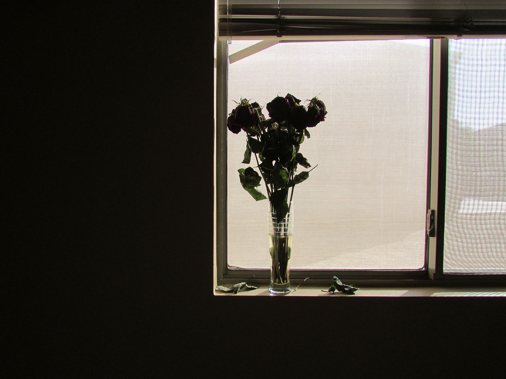

Harry Styles isn't exactly dressed down for lunch. He’s got a white floppy hat that Diana Ross might have won from Elton in a poker game at Cher’s mansion circa 1974, plus Gucci shades, a cashmere sweater, and blue denim bell-bottoms. His nail polish is pink and mint green. He’s also carrying his purse — no other word for it — a yellow patent-canvas bag with the logo “Chateau Marmont.” The tough old ladies who work at this Beverly Hills deli know him well. Gloria and Raisa dote on him, calling him “my love” and bringing him his usual tuna salad and iced coffee. He turns heads, to put it mildly, but nobody comes near because the waitresses hover around the booth protectively.
He was just a small-town English lad of 16 when he became his generation’s pop idol with One Direction. When the group went on hiatus, he struck out on his own with his brash 2017 solo debut, whose lead single was the magnificently over-the-top six-minute piano ballad “Sign of the Times.” Even people who missed out on One Direction were shocked to learn the truth: This pinup boy was a rock star at heart.
A quick highlight reel of Harry’s 2019 so far: He hosted the Met Gala with Lady Gaga, Serena Williams, Alessandro Michele, and Anna Wintour serving an eyebrow-raising black lace red-carpet look. He is the official face of a designer genderless fragrance, Gucci’s Mémoire d’une Odeur. When James Corden had an all-star dodgeball match on The Late Late Show, Harry got spiked by a hard serve from Michelle Obama, making him perhaps the first Englishman ever hit in the nads on TV by a First Lady.
Closer to his heart, he brought down the house at this year’s Rock n Roll Hall of Fame ceremony with his tribute to his friend and idol Stevie Nicks. “She’s always there for you,” Harry said in his speech. “She knows what you need: advice, a little wisdom, a blouse, a shawl.” He added, “She’s responsible for more running mascara — including my own — than all the bad dates in history.” (Backstage, Nicks accidentally referred to Harry’s former band as “’NSync.” Hey, a goddess can get away with that sort of thing.)
 Back to Course Home Page